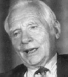

Faktaservice nr. 3 95/96, OKTOBER 1995
FREDSPRISEN FOR 1995:

Joseph Rotblat
Verdens første atommotstander blir han kalt, fredsprisvinner Joseph Rotblat, som var med på å utvikle Hiroshima-bomben.Den polskfødte Rotblat arbeidet som atomfysiker ved et radiologisk laboratorium i Warszawa da han i begynnelsen av 1939 først fikk høre om spalting av uran. Det tok ham ikk lang tid å forstå rekkevidden av dette: En eksplosjon av en styrke verden aldri tidligere hadde sett.
På vårparten 1939 dro han til Liverpool i Nord-England for å samarbeide med forskere der. Han overbeviste seg selv om at den eneste mulighet til å stoppe Tyskland fra å ta i bruk den nye viten, var "at vi også hadde bomben og truet med gjengjeldelse. Jeg så aldri for meg at vi skulle bruke den, selv ikke mot tyskerne", skriver han.
Manhattan-prosjektet
Da tyskerne invaderte hans hjemland Polen høsten 1939, overvant Rotblat sine skrupler. Han samarbeidet med andre forskere ved det topphemmelige amerikanske Manhattan-prosjektet om utvikling av atombomben. Men som den eneste av dem trakk han seg ut av prosjektet i desember 1944, da det ble klart at Hitler ikke hadde atombombe, og da han forsto at prosjektledelsen vurderte å bruke bomben mot russerne.Lamslått
Joseph Rotblat ble lamslått da atombomben ble sluppet over Hiroshima og Nagasaki.- Arbeidet ved Manhattan-prosjektet førte til en radikal endring av min vitenskaplige karrière og min holdning til våre sosiale forpliktelser. Jeg valgte derfor å vie meg til en del av atomfysikken som ubetinget er av det gode: medisin, skriver Rotblat.
Joseph Rotblat, som fyller 87 år 4. november, ble britisk statsborger i 1946. Han bor i London og er professor i fysikk ved London University, og hans forskning innen radioaktiv biologi er anerkjent verden over.
Pugwash Conference on Science and World Affairs
Rotblat og PugwashElisabeth Randsborg, Aftenposten

[Innhold] [Info]
[Aftenposten hjemmeside] [Til Fakta hovedside]